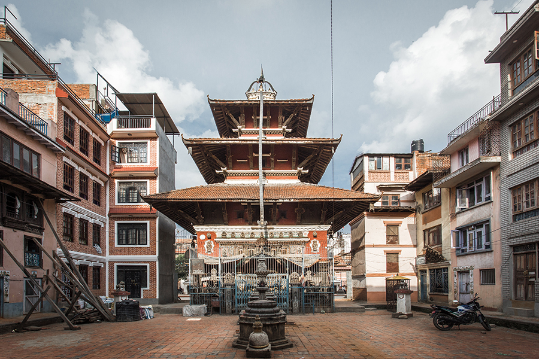

MayThe Mahavihar is believed to be about 1,700 years old, making it one of the oldest Buddhist institutions in the Kathmandu Valley.
It was founded to fulfill the wish of the scholar Pandit Jayashree Mishra, who became initiated into Buddhism with the support of King Shankardeva during the Lichchhavi period — considered a golden era for Buddhism in Nepal.
The Sanskrit name Mayurvarna means “peacock-colored.”
According to legend, during the search for the right location to build the monastery, a beautiful peacock (mayur) appeared and guided everyone to the site where the Mahavihar now stands — hence the name.
As a baha or mahavihar, it follows the Newar Buddhist architectural tradition characterized by open courtyards surrounded by buildings that house shrines, community spaces, and sometimes monks’ living areas.
The courtyard and structures reflect centuries of cultural layering and traditional craftsmanship maintained by the local Buddhist community.
The monastery remains active in religious practice, holding daily worship and ritual ceremonies.
It’s associated with various tantric traditions, scholars, and historic figures in Newar Buddhism.
One unique ongoing tradition involves placing a red patuka (cloth belt) from the Mahavihar on the chariot of Rato Machindranath during the famous annual Rato Machindranath Jatra — a key cultural festival in Patan.
Over the centuries, members of the Sarva Sangh (community society) of the Mahavihar have contributed to important city landmarks and community-built sites in Kathmandu Valley.
The local association and reform committees continue efforts in preserving, promoting, and restoring the heritage and traditions of the Mahavihar.
Mayur Varna Mahavihar (Bhinchhe Bahal)
Historic Buddhist courtyard | Patan, Lalitpur
Bhinchhe Bahal is a traditional residential courtyard dating back to the medieval period. It continues to function as a shared living space where families and traditional artists reside. Stone carvers, metalworkers, engravers, and Thangka painters living here contribute to Patan’s long artistic heritage through everyday practice and community life.
Bhinchhe Bahal (Mayur Varna Mahavihar): Historic Buddhist courtyard and living artists’ community in the old city of Patan.